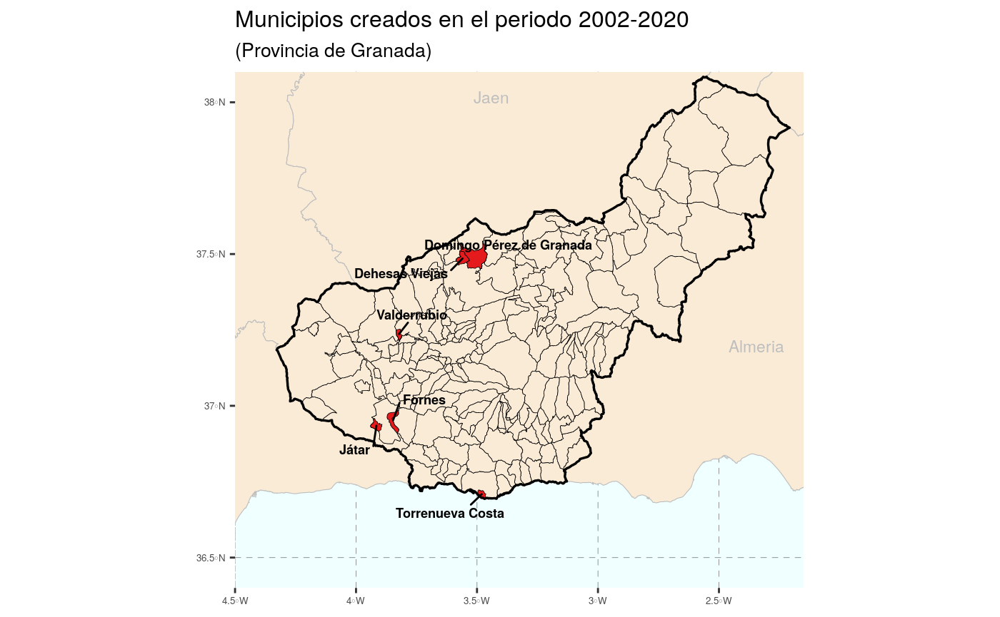
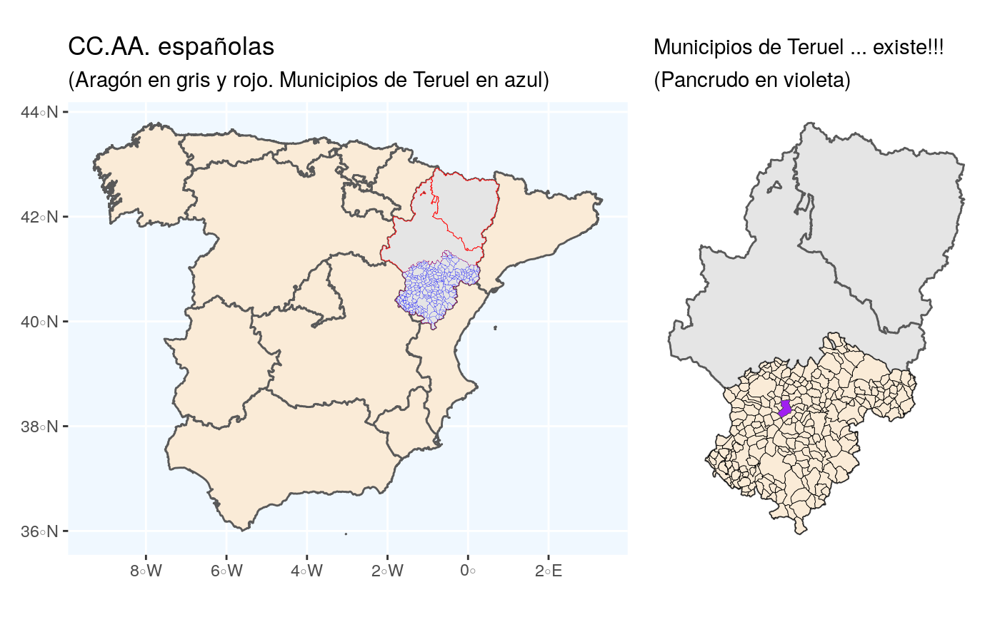
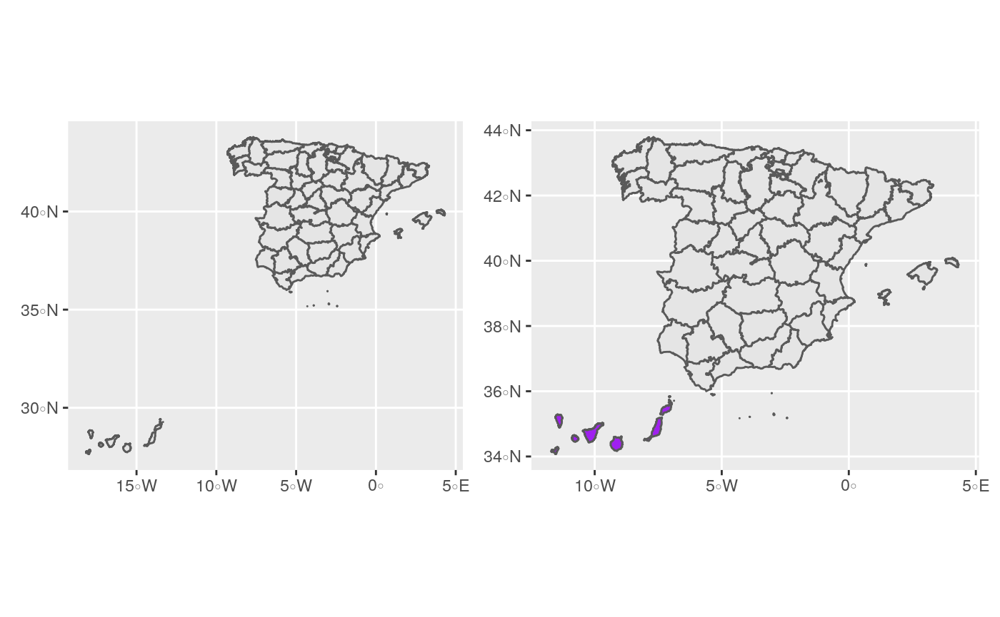

vignettes/intro-to-lau2boundaries4spain.Rmd
intro-to-lau2boundaries4spain.RmdLAU2boundaries4spain es un paquete de R cuyo objetivo es facilitar la realización de mapas a nivel municipal para España. Para ello se ofrecen las geometrías o contornos municipales españoles para los años 2002 a 2021.
¿Es necesaria esta información? Evidentemente pensamos que sí. En España el organismo encargado de ofrecer está información es el Instituto Geográfico Nacional (IGN), pero el IGN no ofrece un registro histórico de las lineas límite municipales; solo ofrece la información más actual. Por lo tanto, si se quisiera representar gráficamente, por ejemplo, la población o la renta per cápita por municipios en el año 2010, ocurriría que los contornos ofrecidos por el IGN no cuadrarían con la información estadística del INE referida a 2010. La razón es que la relación de municipios puede cambiar con el tiempo; por ejemplo, en el año 2018 se crearon en España 7 nuevos municipios, entre ellos El Palmar de Troya, que surge como una segregación de Utrera.
Información más detallada del proceso seguido para la construcción de los diferentes ficheros de lindes puede encontrase en las dos vignettes del package, concretamente aquí y aquí
Durante el periodo 2002-2021 desaparecieron en España 4 municipios 1 y se crearon 25 municipios nuevos. El listado completo de alteraciones municipales puede consultarse en el INE. Como ejemplo, el siguiente gráfico muestra los 6 municipios nuevos creados en la provincia de Granada durante el periodo 2002-2021.

Como curiosidad, en 2021 hay en España 8.131 municipios, pero el fichero municipios_2021 tiene 8212 registros. ¿Cuál es la razón de esta discrepancia entre el número oficial de municipios y los datos del IGN? ¿Se inventa el IGN municipios? Evidentemente no. La razón es que en España existen territorios que no pertenecen a un único municipio, son los llamados condominios. Actualmente en los ficheros del IGN existen 81 condominios, la mayoría de estos territorios están en las provincias Burgos y Navarra, siendo el mayor de ellos las Bardenas Reales. Aquí puedes ver los territorios comunales, generalmente llamados Facerías, en la provincia de Navarra.
Como el objetivo último de este repositorio es facilitar la representación gráfica de información estadística a nivel municipal, se facilitan los contornos de los términos municipales españoles ajustados a los municipios existentes a 1 de enero de cada año desde 2002, de forma que cuadren exactamente con el Padrón de dicho año. Los contornos a fecha de 1 de enero de 2002 son consistentes con los existentes en el censo de 2001, con fecha de referencia 1 de noviembre de dicho año.
Creemos que dicha base de datos es útil por varias razones. El Instituto Geográfico Nacional (IGN) ofrece, a través del Centro de Descargas del Centro Nacional de Información Geográfica, los recintos municipales –también los provinciales y autonómicos– dentro de la Base de Datos de Líneas de Límite Municipal en la Información Geográfica de Referencia, sin embargo estas bases de datos son de actualización continua, de forma que lo que se dispone son los municipios “en el momento actual”, y no existe un histórico que puede ser de utilidad por muchas razones. Así pues, hasta donde nosotros conocemos, no se dispone, por ejemplo, de una capa vectorial de los polígonos municipales del año 2006, o de la de los municipios correspondientes al censo de 2001. Esta información es necesaria si queremos combinar la información geográfica con la información estadística municipal histórica procedente, por ejemplo, del Instituto Nacional de Estadística (INE).
Este repositorio pretende cubrir esa laguna que, de momento, no ha sido satisfecha por las instituciones oficiales. El repositorio está disponible como un package de R alojado en Github: https://github.com/rOpenSpain/LAU2boundaries4spain. La información ofrecida ha ido elaborándose durante bastante tiempo a partir de diversos trabajos (Goerlich, Mas, Azagra y Chorén 2006, 2007; Goerlich, Ruiz, Chorén y Albert 2015; Reig, Goerlich y Cantarino 2016).
Información más detallada del proceso seguido para la construcción de los diferentes ficheros de lindes puede encontrase en las dos vignettes del package, concretamente aquí y aquí
El paquete proporciona:
CCAA)Provincias)municipios_2021)Los ficheros se ofrecen en formato spatial-df del paquete sf
Para cargar los datos en R:
library(LAU2boundaries4spain)
CCAA <- CCAA #- geometrías de CC.AA
Provincias <- Provincias #- geometrías provinciales
municipios_2017 <- municipios_2017 #- geometrías municipales año 2017 (años posibles: 2002 - 2021)sf:
library(LAU2boundaries4spain)
library(tidyverse)
library(sf)
library(patchwork)
CCAA_peninsular <- CCAA %>% filter(!NombreCCAA %in% c("Canarias", "Illes Balears", "Ciudades Autónomas de Ceuta y Melilla"))
Prov_aragon <- Provincias %>% filter(NombreCCAA == "Aragón")
muni_teruel_2017 <- municipios_2017 %>% filter(NombreProv == "Teruel")
Pancrudo <- muni_teruel_2017 %>% filter(NombreMuni == "Pancrudo")
p1 <- ggplot(data = CCAA_peninsular) + geom_sf(fill = "antiquewhite") +
geom_sf(data = Prov_aragon, color = "red", size = 0.15) +
geom_sf(data = muni_teruel_2017, color = "blue", size = 0.05) + theme(panel.background = element_rect(fill = "aliceblue")) +
labs(title = "CC.AA. españolas", subtitle = "(Aragón en gris y rojo. Municipios de Teruel en azul)")
p2 <- ggplot(data = Prov_aragon) + geom_sf() +
geom_sf(data = muni_teruel_2017, color = "black", size = 0.15, fill = "antiquewhite") +
geom_sf(data = Pancrudo, fill = "purple", size = 0.1) + theme_minimal() +
labs(title = "Municipios de Teruel ... existe!!!", subtitle = "(Pancrudo en violeta)") +
theme(axis.text = element_blank()) +
theme(panel.grid.major = element_blank()) +
theme(plot.title = element_text(size = 11))
p1 + p2
library(LAU2boundaries4spain)
library(tidyverse)
library(sf)
library(patchwork)
canarias <- Provincias %>% filter(INECodProv %in% c(35,38))
peninsula <- Provincias %>% filter( !(INECodProv %in% c(35, 38)) )
my_shift <- st_bbox(peninsula)[c(1,2)]- (st_bbox(canarias)[c(1,2)]) + c(-2.4, -1.1)
canarias$geometry <- canarias$geometry + my_shift
st_crs(canarias) <- st_crs(peninsula)
peninsula_y_canarias <- rbind(peninsula, canarias)
p1 <- ggplot() + geom_sf(data = Provincias)
p2 <- ggplot() + geom_sf(data = peninsula) + geom_sf(data = canarias, fill = "purple")
p1 + p2 
Concretamente los municipios de Cerdedo y Cotabade, que se juntaron para crear Cerdedo-Cotobade y los municipios de Cesuras y Oza dos Ríos que acabaron formando Oza-Cesuras↩︎